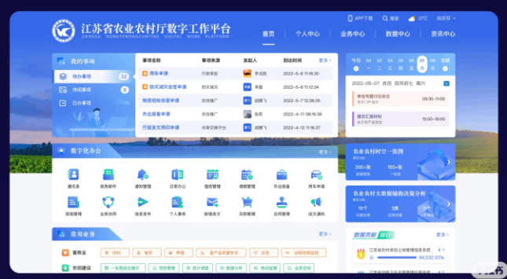

Content Automation Console
政務網內容矩陣自動發布管理臺
把選題規劃、內容生產、帳號分發、定時發布、失敗重試和數據復盤放進同一個工作臺，由主線程統一調度，多線程並行推進。

多線程任務看板
當前對話作為主線程，自動分配分析、執行、檢查和營運內容任務。
調度彙總
接收需求、拆分任務、合併結果、輸出最終交付。
進行中需求分析
梳理發布流程、帳號邊界、風險和優先級。
已完成實現執行
建立頁面、寫入配置、串聯發布工作區。
進行中檢查驗證
檢查頁面顯示、按鈕狀態、移動端佈局。
等待中內容營運
沉澱標題、正文、標籤和發布節奏策略。
已完成
發布任務
帳號
時間
狀態
護膚測評選題 01
種草號 A
09:30
待發布
家居收納腳本複核
生活號 B
11:20
待審核
通勤穿搭圖文發布
穿搭號 C
15:40
待發布
親子週末攻略重試
親子號 D
18:15
需重試
核心能力
圍繞政務網矩陣號的發布、重試、監控和復盤搭建。
選題規劃
按品類、帳號人設和發布時間生成內容佇列。
素材管理
集中管理圖片、影片、標題、正文和標籤。
帳號矩陣
區分帳號定位、發布頻次、內容風格和風險等級。
定時發布
按黃金時間段排隊執行，保留人工確認點。
失敗重試
記錄失敗原因，支援重新排隊與人工介入。
數據復盤
追蹤閱讀、互動、收藏和轉化趨勢。
建設規劃
先把可控流程跑穩，再擴展矩陣號和自動化規模。
基礎發布閉環
內容匯入、素材匹配、發布排期、狀態回寫、日誌追蹤。
矩陣帳號管理
帳號分組、人設標籤、發布頻率、異常提醒、權限隔離。
營運策略引擎
選題庫、爆款模板、發布時間建議、數據復盤和策略更新。
穩定性增強
失敗重試、風控提示、人工確認、備份恢復和告警中心。